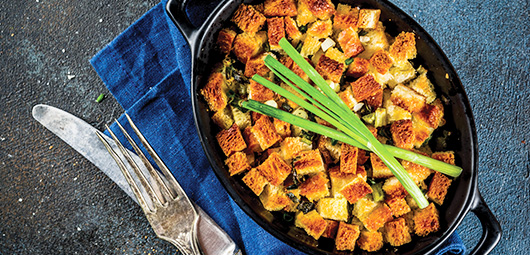

Festive Stuffing

Amazing Gango
THis festive brings together all the trimmings
Ingredients
- 225g butter, divided
- 450g day-old white French bread, diced into cubes and dried
- 1 onion, diced small
- 225g celery, diced small
- 17g flat-leaf parsley leaves, finely chopped
- 10g fresh sage leaves, finely chopped
- 3 tbsps fresh rosemary, finely chopped
- 2 tbsps fresh thyme, finely chopped
- 1 tsp salt, or to taste
- 1 tsp pepper, or to taste
- 625ml chicken stock, divided
- 2 eggs
Steps
-
Preheat oven to 120°C. Place cubed bread on a baking sheet and bake, stirring occasionally, until dried out, about 45 minutes. Transfer bread to a large bowl; set aside.
Heat oven to 180°C and spray a baking dish with cooking spray; set aside.
-
To a large pan, add 170g butter and heat over medium-high heat to melt.
-
Add the onions, celery, and cook until vegetables have softened and are just beginning to lightly brown, about 10 minutes. Stir frequently. Transfer vegetables to bowl with the bread.
Add the parsley, sage, rosemary, thyme, salt, pepper, 310ml chicken stock, and toss well to combine; set aside.
-
In a small bowl, add the remaining chicken stock, eggs, and whisk to combine. Pour mixture over bread and toss well to combine.
Turn mixture out into prepared baking dish.
-
Dice the remaining butter into 8 to 10 pieces and evenly dot the butter over the top of the stuffing.
Cover with foil and bake for 40 minutes. Uncover and bake for an additional 40 to 45 minutes, or until top is as lightly golden browned as desired. Serve immediately.
Back to Home page